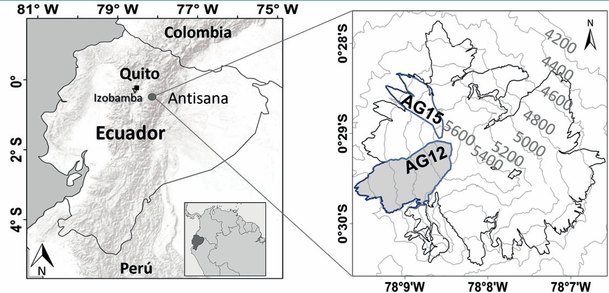
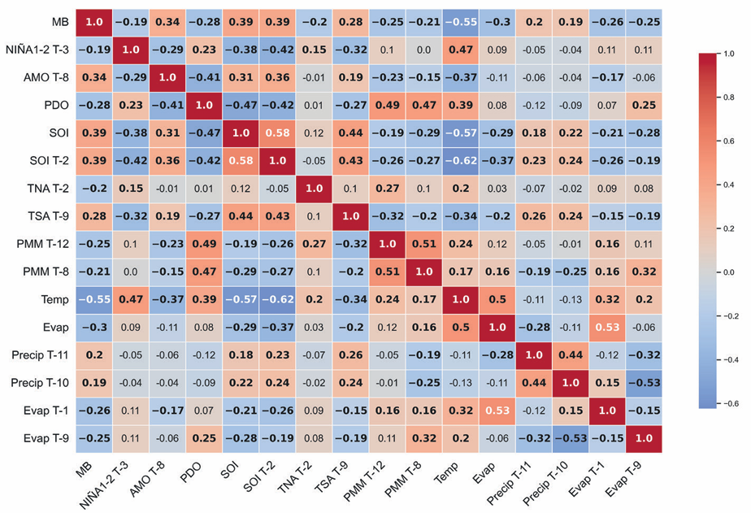
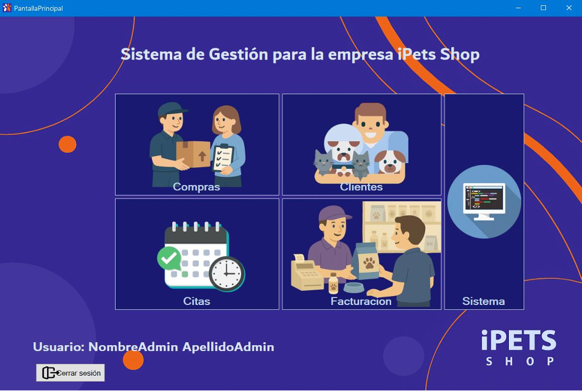
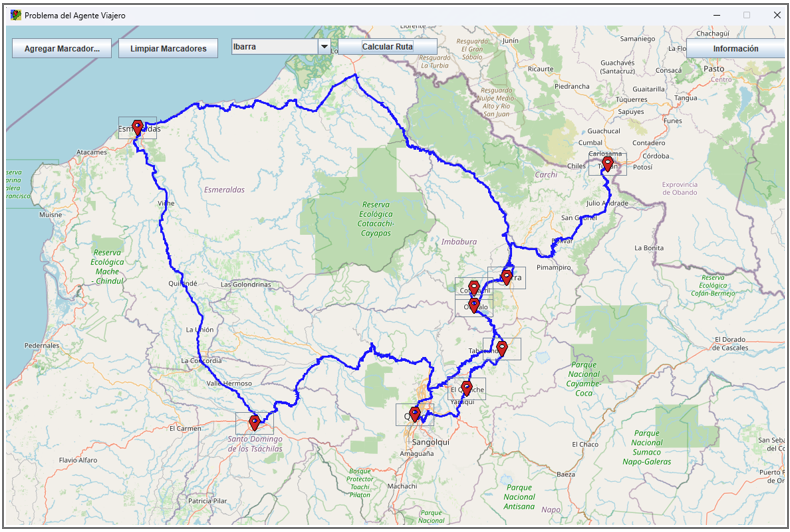
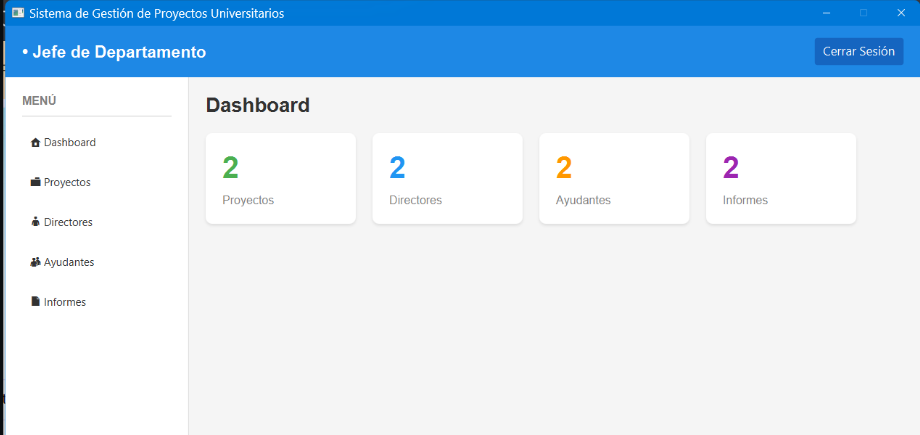
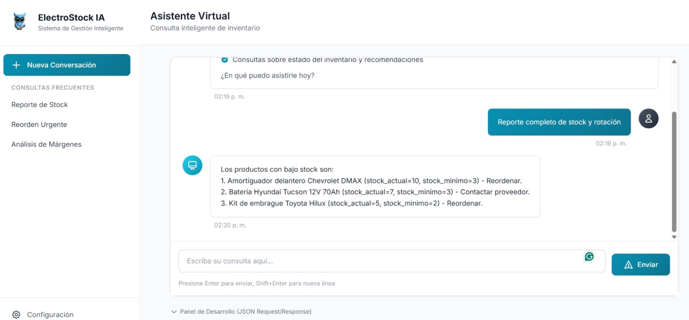
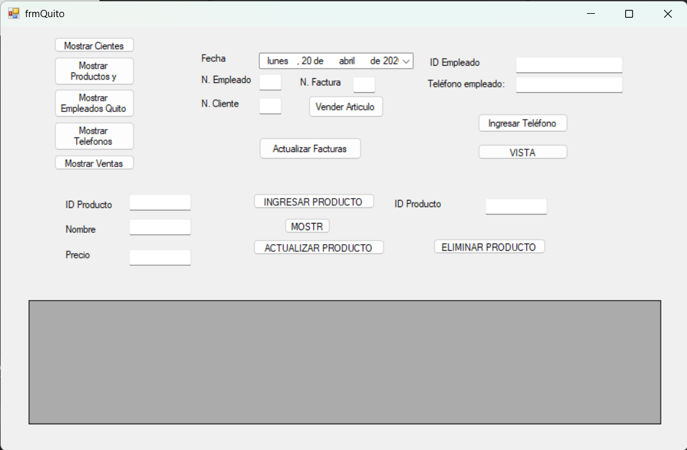
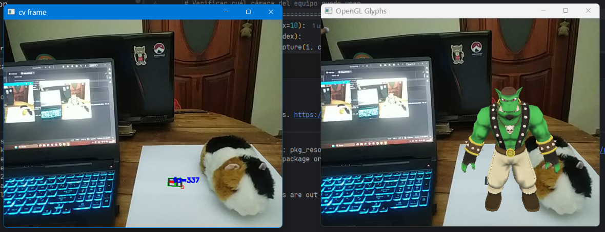
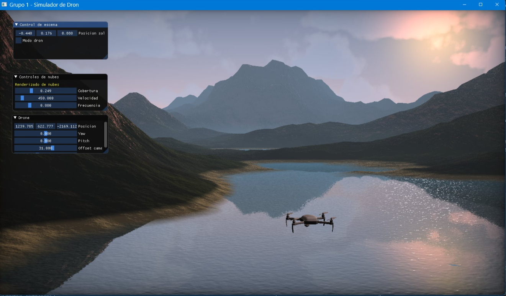
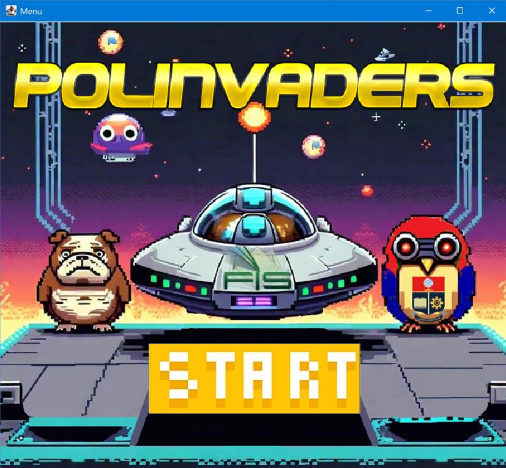

Proyecto de Investigación en Machine Learning aplicado a Glaciares
Participación en un proyecto de investigación sobre el retroceso del glaciar Antisana 15 mediante técnicas de Machine Learning en Python, aplicando modelos como KNN y Random Forest con datos climáticos e índices oceánicos. El estudio permitió analizar patrones de cambio glaciar y fortalecer habilidades en análisis de datos y modelado predictivo.


iPets
Proyecto de la materia de Ingeniería de Software y de Requerimientos. Se desarrolló el sistema SIGACCEM-PetGlow utilizando C# sobre la plataforma .NET, enfocado en la gestión y agendamiento de citas para servicios estéticos de mascotas. El sistema automatiza procesos en la tienda de mascotas iPets Shop como el registro de clientes y mascotas, la programación de citas y el control de inventario mediante una arquitectura modular, mejorando la eficiencia operativa y reduciendo errores asociados a la gestión manual. Además, integra una interfaz intuitiva que facilita la organización de la información y optimiza la atención al cliente.

Problema del Agente Viajero
Proyecto de la materia de EDA II. Trata de una aplicación interactiva en Java para la simulación del Problema del Viajero (TSP), implementando algoritmos de grafos y técnicas de optimización como backtracking y ramificación y poda. El sistema permite al usuario ingresar ciudades sobre un mapa, calcular la ruta óptima y visualizar el recorrido en una interfaz gráfica construida con librerías como Swing y herramientas de mapas basadas en OpenStreetMap.

Sistema de Gestión de Ayudantes de Investigación
Proyecto realizado en la materia de Diseño de Software. Se desarrolló un sistema de gestión de ayudantes de investigación utilizando Java, enfocado en el control y seguimiento de la participación de estudiantes en proyectos académicos. El sistema implementa el patrón de arquitectura MVC (Modelo-Vista-Controlador), integrando una interfaz gráfica desarrollada con JavaFX y una capa de persistencia basada en JPA/Hibernate conectada a MySQL.

ElectroStock IA
Proyecto realizado en la materia de Inteligencia Artificial y Aprendizaje Automático. Se desarrolló un agente inteligente para la gestión de inventarios en PYMES ecuatorianas, implementado en Python. El sistema utiliza un modelo de lenguaje (LLM) ejecutado localmente con Ollama, integrando una arquitectura por capas que incluye una API REST desarrollada con FastAPI, un agente de razonamiento (ToolCallingAgent) y una base de datos en SQL Server.

Tienda Maruja
Proyecto de la materia de Bases de Datos Distribuidas. Se desarrolló un sistema de base de datos distribuida con fragmentación y replicación de datos, integrando una aplicación que permite realizar operaciones CRUD y gestionar ventas e inventario en múltiples sucursales en tiempo real. Para la interfaz se utilizó C# sobre la plataforma .NET

Realidad Aumentada
Aplicación desarrollada en la materia de Computación Gráfica. Se implementó una aplicación de Realidad Aumentada en Python con OpenCV y OpenGL para detectar marcadores ArUco calibrados y superponer un modelo 3D sobre ellos en tiempo real.

Dron Simulator
Proyecto desarrollado en la materia de Computación Gráfica. Se implementó un simulador de dron en OpenGL. El proyecto integró conceptos avanzados de gráficos computacionales como texturas, visualización 3D, materiales, iluminación (point lights y flash lights) y carga de modelos 3D importados.

Polinvaders
Proyecto de la materia Programación II sobre el desarrollo de un videojuego en Java basado en Space Invaders, implementado con arquitectura en capas y programación orientada a objetos, integrando lógica de juego, interfaz gráfica y manejo de eventos en tiempo real.
